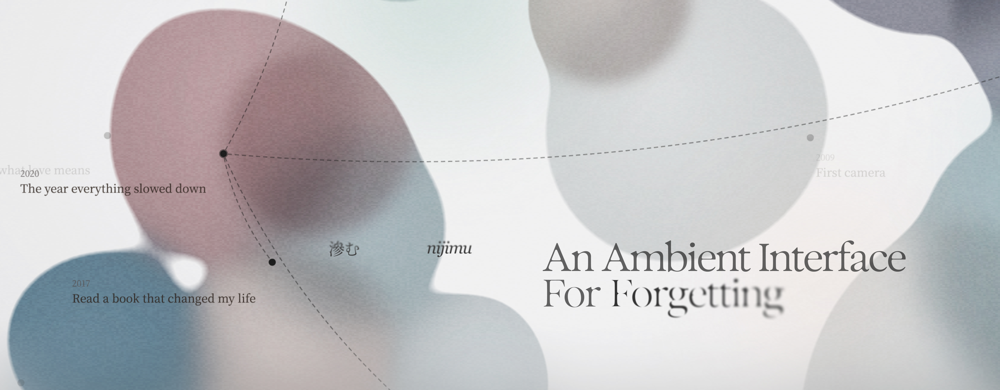

- Interaction Design Track Student 1st Place
- Speculative Design Track Student Notable
nijimu 滲む
A speculative memory wellness tool that treats past experiences as something that dissolves into who you are becoming rather than something to archive or forget.
Back
-
Role
Design engineer, graphic designer
-
Timeline
Feb 2026 - Present
-
Teammates
-
Tools
Figma, Curos
-
Awards
Core77 Design Award
Product highlights
Traversing the memory archive
Transcribing memory into words
Sculpting memory artifacts as living three-dimensional form: real-time hand gesture tracking